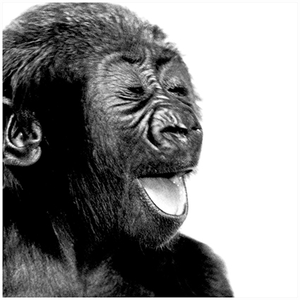

STUDIOVERA
VERA FRIEDERICH
Fotografin und Künstlerin
Skills
Photography
🌟🌟🌟🌟🌟🌟🌟🌟🌟🌟
Englisch
🌟🌟🌟🌟🌟🌟🌟
Web Development
🌟
Exhibitions (excerpt)
DWS/Deutsche Bank "Vera Friederich - In Reflection", Frankfurt am Main (2014)
DWS/Deutsche Bank "Vera Friederich - Perspektiven", Frankfurt am Main (2012)
Galerie Wolkonsky "Vera Friederich - Water & Architecture", München (2012)
Mall Galleries "Renaissance Photograhy Prize 2012", London
Ateneo Cultural "Vera Friederich - Tributo a la Naturaleza", Santiago de Cuba (2001)
Galeria Oriente "Vera Friederich - Santiago de Cuba - Querida", Santiage de Cuba (2000)
Galerie Lichtbild "Männerakte und Portraits", Frankfrut am Main (2000)
Deutsche Fototage "Ich will kein Mitleid! Ich will Respekt!", Köln 1995)
Exhibitions (excerpt)
Book
"
Men Defined - Nudes
" (engl.),"
Der Mann
"(dt.), Edition Stemmle
Art calendars
"
Gorillas
",TeNeues Verlag
"The Man", TeNeues Verlag
"Blow up", Heye Verlag
"Elefantenkinder", Leonverlag
"Silk Men", Brönner Verlag
My hobbies
Contact me